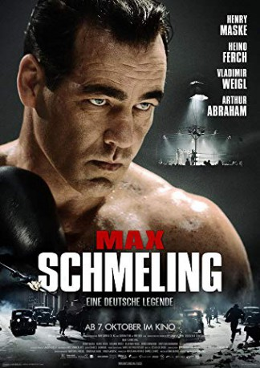
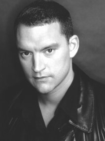
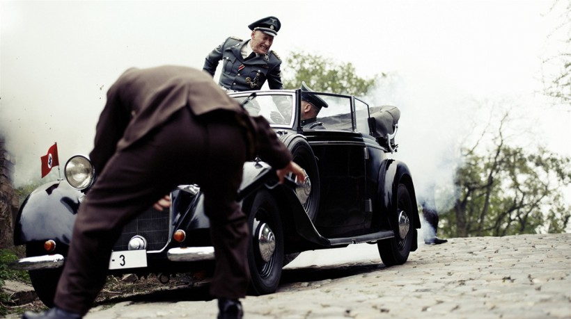

#9174 Max Schmeling - Eine deutsche Legende
Alternativ: Max Schmeling
 
 IMDB-Wertung: 4.8 / 10
IMDB-Wertung: 4.8 / 10  Metascore: 0
Metascore: 0 
Pomeranian (NE German) boxer Max Schmelling, a fair, courageous gentleman, becomes world champion and a national hero in the early 1930s, winning the hand of singer Anny Ondra. Just for loosing against younger, fitter colored American Joe Louis, the Nazi regime lifts Max's privileges and sends him to the front, hoping he'll be killed in action. Yet he survives the conquest of Crete and by freeing a British prisoner unwittingly saves his own skin when after the Soviet conquest of his home region, Max is nearly taken PoW. He starts all over, although rather too old, with remarkable results.
Jahr: 2010
Dauer: 122 Minuten
FSK: 12
Land: Deutschland Studio: KSM FilmTonspuren:
Untertitel:
Auflösung: 1080p (1920x816) Größe: 9748 MB
Genre: Drama, Krieg, Sport, Biographie
Regisseur: Uwe Boll
Drehbuch: Maggie Peren
Soundtrack: Jessica de Rooij
Darsteller:
 Heino Ferch als Max Machon
Heino Ferch als Max Machon Susanne Wuest als Anny Ondra
Susanne Wuest als Anny Ondra-  Christian Kahrmann als Hitler's Adjutant Lehback
 Elliot Cowan als Alan Walken
Elliot Cowan als Alan Walken- Peter Gilbert Cotton als Arthur Brisbane
- Hans-Eckart Eckhardt als Jim Farley
-  Detlef Bothe als Referee Arthur Donovan
- Rolf Peter Kahl als Josef Goebbels
- Angelina Noa als First Aid Nurse Maria
- Uwe Boll als Referee #2
 Luka Peros als Referee Smith / Journalist #2
Luka Peros als Referee Smith / Journalist #2- Karlo Pervan als Newspaper Boy #2
- Robert Jozinovic als Journalist #1
- Vjekoslav Katusin als Boxing Manager #1 (uncredited)
 Joe Thomas als Sports Reporter (uncredited)
Joe Thomas als Sports Reporter (uncredited)- Henry Maske als Max Schmeling
- Vladimir Weigl als Joe Jacobs
- Arved Birnbaum als Hans v. Tschammer u. Osten
- Yoan Pablo Hernández als Joe Louis
- Klaus Schindler als Surgeon Major Schönn
- Enad Licina als Jack Sharkey
- Manfred Wolke als Sharkey's Trainer
- Arthur Abraham als Richard Vogt
- Ulli Wegner als Vogt's Trainer
- Michael Becker als Hamburg Boxer
- Andreas Franke als Joe Louis Opponent #1
- Rüdiger May als Joe Louis Opponent #3
- Stipe Drvis als British Boxer #4
- Andreas von Thien als Announcer #1
- Stefan Gebelhoff als David Lewin
- Tom Sommerlatte als Young Soldier
- Micki Bertling als SA Senior Troop Leader Freilach
- Frank Raffel als First Aid Radio Operator
- Martina von Orten als Housekeeper Lilly
- Bernd Lambrecht als British Admin. Officer
- Sven Medvesek als Cabaret Host
- Vanessa Radman als Mrs. Damski
- Davorka Tovilo als Cigar Girl
- Alain Blazevic als Karel Lamac
- Barbara Prpic als Housekeeper Martha
- Josip Perica als Hermann Heller
- Besim Mujacic als Referee #1
- Bernard Ban als Referee #3
- Walter Knieps als Referee #4
- Alexander Frenkel als Young Stribling
- Darko Milas als Stribling's Father
- Tomislav Grbavac als Page Boy
- Drazen Bratulic als SA Man
- Damir Dolar als Joe Louis Opponent #2
- Luka Dragic als Man in Uniform
Datei: X:\2010(G-M)\Max Schmeling - Eine deutsche Legende (2010, FSK12, 1920x816).mkv seit 19.07.2018
Festplatte: HD 2010(G-Z)-2011(A-F)
 Es gibt insgesamt 85 Filme in der Gruppe '2010(G-M)'
Es gibt insgesamt 85 Filme in der Gruppe '2010(G-M)'